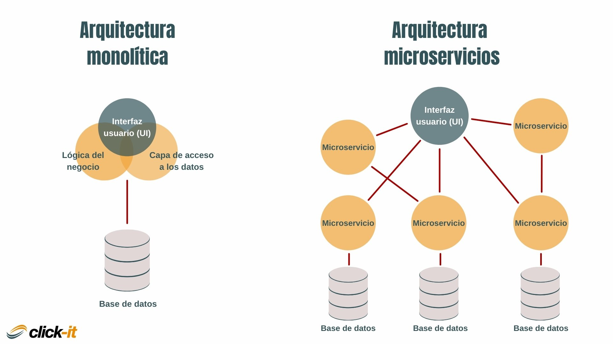
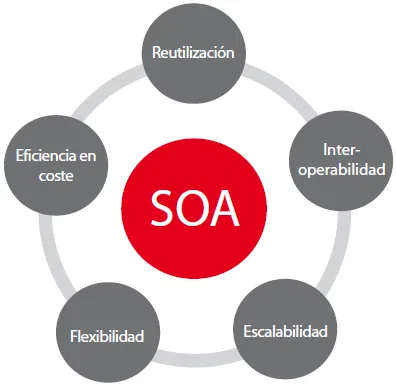
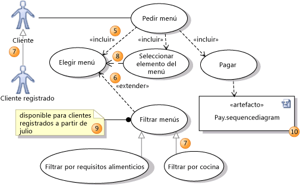
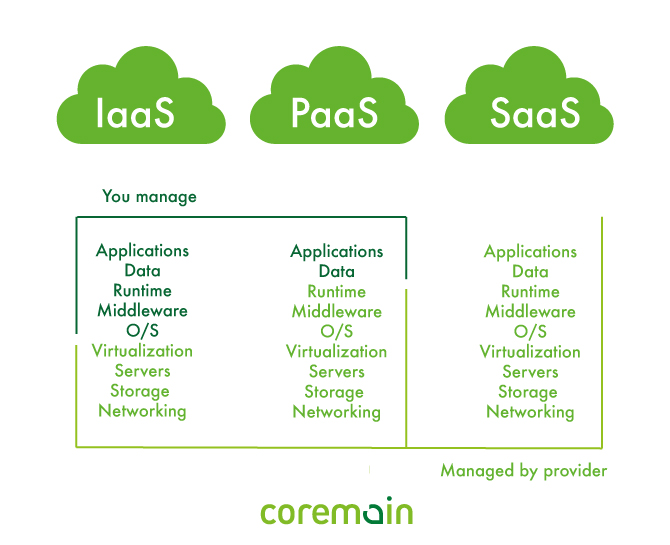

Evolución de la Arquitectura de Sistemas
Análisis sobre la transformación de los modelos arquitectónicos en el desarrollo de software, desde arquitecturas monolíticas hasta soluciones basadas en la nube.
Estudiantes: Luis Stocel & Liam Arosemena
Institución: Instituto Tecnico Superior Especializado
Asignatura: Arquitectura de Software
Introducción
La arquitectura de sistemas ha evolucionado significativamente en las últimas décadas, pasando de modelos monolíticos tradicionales a arquitecturas distribuidas y basadas en la nube. Esta evolución responde a las necesidades de escalabilidad, rendimiento, disponibilidad y alineación con los objetivos estratégicos del negocio.

1. Arquitectura Monolítica
La arquitectura monolítica es un modelo donde toda la aplicación se desarrolla como una única unidad ejecutable. Los módulos como interfaz, lógica de negocio y base de datos están fuertemente acoplados.
Características
- Una sola base de código
- Un único despliegue
- Escalabilidad vertical
- Dependencia entre módulos
Ejemplo Real
Sistemas empresariales desarrollados en Java con servidores como Apache Tomcat o aplicaciones .NET desplegadas en IIS.
2. Arquitectura Orientada a Requerimientos de Negocio
La arquitectura debe alinearse con los objetivos estratégicos del negocio, considerando escalabilidad, disponibilidad, presupuesto y crecimiento futuro.
Ejemplo: Plataforma de Streaming
- Disponibilidad 24/7
- Millones de usuarios simultáneos
- Tolerancia a fallos
- Distribución global
3. Documentación de Requerimientos
Antes de diseñar la arquitectura, se deben documentar los requerimientos funcionales y no funcionales.
Requerimientos Funcionales
- Registro de usuarios
- Procesamiento de pagos
- Generación de reportes
4. Patrones Arquitectónicos Más Utilizados
Cliente-Servidor
Separación entre cliente (interfaz) y servidor (procesamiento).
Arquitectura en Capas
División en presentación, lógica de negocio y datos.
Microservicios
Servicios independientes que se comunican entre sí.

5. Modelo de Servicio IaaS y PaaS
IaaS
Proporciona infraestructura virtualizada como servidores, almacenamiento y redes.
PaaS
Ofrece un entorno completo para desarrollar y desplegar aplicaciones sin gestionar infraestructura.
Conclusión
La evolución de la arquitectura de sistemas demuestra cómo la tecnología se adapta a las necesidades del negocio y a la creciente demanda de escalabilidad y disponibilidad. Comprender estos modelos permite diseñar soluciones más eficientes, seguras y preparadas para el futuro.
Reseña de los Estudiantes

Luis Stocel
Estudiante de desarrollo de software con interés en administración de software, desarrollo backend y frontend.
Liam Arosemena
Estudiante enfocado en desarrollo web e interesado en música y videojuegos.